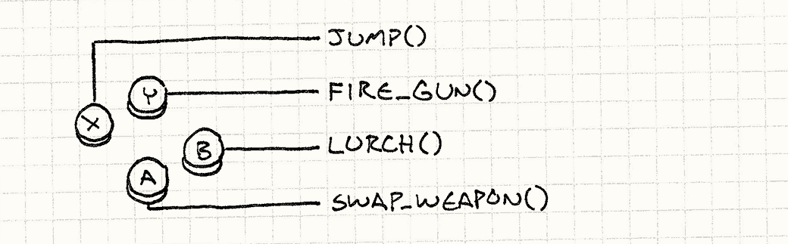

命令
游戏设计模式Design Patterns Revisited
Command is one of my favorite patterns. Most large programs I write, games or otherwise, end up using it somewhere. When I’ve used it in the right place, it’s neatly untangled some really gnarly code. For such a swell pattern, the Gang of Four has a predictably abstruse description:
命令模式是我最喜欢的模式之一。 大多数我写的大型程序，游戏或者别的什么，都会在某处用到它。 当在正确的地方使用时，它可以将复杂的代码清理干净。 对于这样一个了不起的模式，不出所料，GoF有个深奥的定义：
Encapsulate a request as an object, thereby letting users parameterize clients with different requests, queue or log requests, and support undoable operations.
将请求封装为一个对象，允许用户用请求参数化客户， 并请求加入队列或记入日志，并支持撤销操作。
I think we can all agree that that’s a terrible sentence. First of all, it mangles whatever metaphor it’s trying to establish. Outside of the weird world of software where words can mean anything, a “client” is a person — someone you do business with. Last I checked, human beings can’t be “parameterized”.
我们可以讨论一下这是不是个糟糕的句子。 第一，它损坏了想建立的比喻。 在软件之外的狂野世界，词语可以指代任何事物，“客户”是一个人——那些你与之做生意的人。上次我检查时，人类还不能被“参数化”。
Then, the rest of that sentence is just a list of stuff you could maybe possibly use the pattern for. Not very illuminating unless your use case happens to be in that list. My pithy tagline for the Command pattern is:
然后，句子余下的部分介绍了可能会使用这个模式的情况。 如果你的情况不在这个列表中，那么这对你就没有启发。 我的精简的命令模式定义为：
A command is a reified method call.
命令是具现化方法调用。
Of course, “pithy” often means “impenetrably terse”, so this may not be much of an improvement. Let me unpack that a bit. “Reify”, in case you’ve never heard it, means “make real”. Another term for reifying is making something “first-class”.
当然，“精简”往往代表着“严格的简洁”，所以这可能没有太大的改善。 让我扩展一下。“具现化”，如果你没有听说过的话，它的意思是“变得具体”。 另外一种具现化的表达方式是将某事物作为“第一公民”对待。
Both terms mean taking some concept and turning it into a piece of data — an object — that you can stick in a variable, pass to a function, etc. So by saying the Command pattern is a “reified method call”, what I mean is that it’s a method call wrapped in an object.
两种术语都意味着将概念变成数据——一个对象——可以存储在变量中，传给函数之类的。 所以称命令模式为“具现化的方法调用”，意思是方法调用被存储在一个对象中。
That sounds a lot like a “callback”, “first-class function”, “function pointer”, “closure”, or “partially applied function” depending on which language you’re coming from, and indeed those are all in the same ballpark. The Gang of Four later says:
这听起来有些像“回调”，“第一公民函数”，“函数指针”，“闭包”，“偏函数”， 取决于你在学哪种语言，事实上大致上是同一个东西。GoF随后说：
Commands are an object-oriented replacement for callbacks.
命令模式是一种回调的面向对象实现。
That would be a better slugline for the pattern than the one they chose.
这是一种对命令模式更好的解释。
But all of this is abstract and nebulous. I like to start chapters with something concrete, and I blew that. To make up for it, from here on out it’s all examples where commands are a brilliant fit.
但这些都既抽象又模糊。我喜欢用实际的东西作为章节的开始，搞砸了。 作为弥补，从这里开始都是命令模式能出色应用的例子。
Configuring Input
设定输入
Somewhere in every game is a chunk of code that reads in raw user input — button presses, keyboard events, mouse clicks, whatever. It takes each input and translates it to a meaningful action in the game:
在每个游戏中都有一块代码读取用户的输入——按钮按下，键盘敲击，鼠标点击，诸如此类。 这块代码会获取用户的输入，然后将其变为游戏中有意义的行为。

A dead simple implementation looks like:
一种简单死了的实现会是这样：
void InputHandler::handleInput() { if (isPressed(BUTTON_X)) jump(); else if (isPressed(BUTTON_Y)) fireGun(); else if (isPressed(BUTTON_A)) swapWeapon(); else if (isPressed(BUTTON_B)) lurchIneffectively(); }
This function typically gets called once per frame by the Game Loop, and I’m sure you can figure out what it does. This code works if we’re willing to hard-wire user inputs to game actions, but many games let the user configure how their buttons are mapped.
这个函数通常在游戏循环中每帧调用一次，我确信你可以理解它做了什么。 这代码在我们想将用户的输入和程序行为硬编码在一起时可以正常工作，但是许多游戏允许玩家设定按键的功能。
To support that, we need to turn those direct calls to jump() and fireGun()
into something that we can swap out. “Swapping out” sounds a lot like assigning
a variable, so we need an object that we can use to represent a game action.
Enter: the Command pattern.
为了支持这点，需要将这些对jump()和fireGun()的直接调用转化为可以更换的东西。 “更换”听起来有点像声明变量，因此我们需要表示游戏行为的对象。进入：命令模式。
We define a base class that represents a triggerable game command:
我们定义了一个基类代表可触发的游戏命令：
class Command { public: virtual ~Command() {} virtual void execute() = 0; };
Then we create subclasses for each of the different game actions:
然后我们为不同的游戏行为定义相应的子类：
class JumpCommand : public Command { public: virtual void execute() { jump(); } }; class FireCommand : public Command { public: virtual void execute() { fireGun(); } }; // You get the idea...
In our input handler, we store a pointer to a command for each button:
在输入控制器，为每个键存储一个指向命令的指针。
class InputHandler { public: void handleInput(); // Methods to bind commands... private: Command* buttonX_; Command* buttonY_; Command* buttonA_; Command* buttonB_; };
Now the input handling just delegates to those:
现在输入处理处理了这些：
void InputHandler::handleInput() { if (isPressed(BUTTON_X)) buttonX_->execute(); else if (isPressed(BUTTON_Y)) buttonY_->execute(); else if (isPressed(BUTTON_A)) buttonA_->execute(); else if (isPressed(BUTTON_B)) buttonB_->execute(); }
Where each input used to directly call a function, now there’s a layer of indirection:
当每个输入直接调用函数，会有一层间接寻址：

This is the Command pattern in a nutshell. If you can see the merit of it already, consider the rest of this chapter a bonus.
这是命令模式的简短介绍。如果你能够看出它的好处，就把这章剩下的部分作为奖励吧。
Directions for Actors
角色指导
The command classes we just defined work for the previous example, but they’re
pretty limited. The problem is that they assume there are these top-level
jump(), fireGun(), etc. functions that implicitly know how to find the
player’s avatar and make him dance like the puppet he is.
我们刚才定义的类可以在之前的例子上正常工作，但局限很大。
问题在于假设顶层的jump(), fireGun()之类的函数可以找到玩家的角色，然后像木偶一样让它跳舞。
That assumed coupling limits the usefulness of those commands. The only thing
the JumpCommand can make jump is the player. Let’s loosen that restriction.
Instead of calling functions that find the commanded object themselves, we’ll
pass in the object that we want to order around:
这些假定的耦合限制了这些命令的用处。JumpCommand只能让玩家的角色跳跃。让我们放松这个限制。
不让函数去找它们控制的角色，将控制的角色对象传进去：
class Command { public: virtual ~Command() {} virtual void execute(GameActor& actor) = 0; };
Here, GameActor is our “game object” class that represents a character in the
game world. We pass it in to execute() so that the derived command can invoke
methods on an actor of our choice, like so:
这里GameActor是代表游戏世界中角色的“游戏对象”类。
我们将其传给execute()，这样可以在它的子类中添加函数，来与我们选择的角色关联，就像这样：
class JumpCommand : public Command { public: virtual void execute(GameActor& actor) { actor.jump(); } };
Now, we can use this one class to make any character in the game hop around.
We’re just missing a piece between the input handler and the command that takes
the command and invokes it on the right object. First, we change handleInput()
so that it returns commands:
现在，我们可以使用这个类让游戏中的任何角色跳来跳去了。
还少了一块在输入控制和在正确的对象上起作用之间的代码。
第一，我们修改handleInput()这样它可以返回命令：
Command* InputHandler::handleInput() { if (isPressed(BUTTON_X)) return buttonX_; if (isPressed(BUTTON_Y)) return buttonY_; if (isPressed(BUTTON_A)) return buttonA_; if (isPressed(BUTTON_B)) return buttonB_; // Nothing pressed, so do nothing. return NULL; }
It can’t execute the command immediately since it doesn’t know what actor to pass in. Here’s where we take advantage of the fact that the command is a reified call — we can delay when the call is executed.
这里不能立即执行，因为还不知道哪个角色会传进来。
这里我们享受了命令是具体调用的好处——可以延迟到调用执行时。
Then, we need some code that takes that command and runs it on the actor representing the player. Something like:
然后，需要代码接受命令，在玩家角色上起作用。像这样：
Command* command = inputHandler.handleInput(); if (command) { command->execute(actor); }
Assuming actor is a reference to the player’s character, this correctly drives
him based on the user’s input, so we’re back to the same behavior we had in the
first example. But adding a layer of indirection between the command and the
actor that performs it has given us a neat little ability: we can let the
player control any actor in the game now by changing the actor we execute
the commands on.
将actor视为玩家角色的引用，它会正确的按着玩家的输入移动，
所以我们获得了在第一个例子中相同的行为。
但是在命令和角色间增加了一层重定向，
我们获得了一个灵巧的功能：我们可以让玩家控制游戏中的任何角色，只需改变在哪个角色上执行代码。
In practice, that’s not a common feature, but there is a similar use case that
does pop up frequently. So far, we’ve only considered the player-driven
character, but what about all of the other actors in the world? Those are driven
by the game’s AI. We can use this same command pattern as the interface between
the AI engine and the actors; the AI code simply emits Command objects.
在实践中，这并不是常用的功能，但是这经常会有类似的用例跳出来。
到目前为止，我们只考虑了玩家控制的角色，但是游戏中的其他角色呢？
它们被游戏AI控制。我们可以在AI和角色之间使用相同的命令模式；AI代码只是简单的放出Command对象。
The decoupling here between the AI that selects commands and the actor code that performs them gives us a lot of flexibility. We can use different AI modules for different actors. Or we can mix and match AI for different kinds of behavior. Want a more aggressive opponent? Just plug-in a more aggressive AI to generate commands for it. In fact, we can even bolt AI onto the player’s character, which can be useful for things like demo mode where the game needs to run on auto-pilot.
在选择命令的AI和展现命令的游戏角色间解耦给了我们很大的灵活度。 我们可以对不同的角色使用不同的AI，或者为了不同的行为而混合AI。 想要一个更加有攻击性的同伴？插入一个更加有攻击性的AI为其生成命令。 事实上，我们甚至可以为玩家角色加上AI， 这在原型阶段，游戏需要自动驾驶员是很有用的。
By making the commands that control an actor first-class objects, we’ve removed the tight coupling of a direct method call. Instead, think of it as a queue or stream of commands:
把控制角色的命令变为第一公民对象，去除直接方法调用中严厉的束缚。 取而代之的是，将其视为命令队列，或者是命令流：

Some code (the input handler or AI) produces commands and places them in the stream. Other code (the dispatcher or actor itself) consumes commands and invokes them. By sticking that queue in the middle, we’ve decoupled the producer on one end from the consumer on the other.
一些代码（输入控制器或者AI）产生一系列指令然后将其放入流中。 另一些指令（调度器或者角色自身）消耗指令并调用他们。 通过在中间加入了一个队列，我们解耦了消费者和生产者。
Undo and Redo
撤销和重做
The final example is the most well-known use of this pattern. If a command object can do things, it’s a small step for it to be able to undo them. Undo is used in some strategy games where you can roll back moves that you didn’t like. It’s de rigueur in tools that people use to create games. The surest way to make your game designers hate you is giving them a level editor that can’t undo their fat-fingered mistakes.
最后的这个例子是这种模式最广为人知的使用情况。 如果一个命令对象可以做一件事，那么它亦可以撤销这件事。 在一些策略游戏中使用撤销，这样你就可以回滚那些你不喜欢的操作。 在人们创造游戏时，这是必不可少的工具。 不能撤销肥手指导致的错误的编辑器，肯定会让游戏设计者恨你。
Without the Command pattern, implementing undo is surprisingly hard. With it, it’s a piece of cake. Let’s say we’re making a single-player, turn-based game and we want to let users undo moves so they can focus more on strategy and less on guesswork.
没有了命令模式，实现撤销非常困难，有了它，就是小菜一碟。 假设我们在制作单人回合制游戏，想让玩家能撤销移动，这样他们就可以集中注意力在策略上而不是猜测上。
We’re conveniently already using commands to abstract input handling, so every move the player makes is already encapsulated in them. For example, moving a unit may look like:
我们已经使用了命令来抽象输入控制，所以每个玩家的举动都已经被封装其中。 举个例子，移动一个单位的代码可能如下：
class MoveUnitCommand : public Command { public: MoveUnitCommand(Unit* unit, int x, int y) : unit_(unit), x_(x), y_(y) {} virtual void execute() { unit_->moveTo(x_, y_); } private: Unit* unit_; int x_, y_; };
Note this is a little different from our previous commands. In the last example, we wanted to abstract the command from the actor that it modified. In this case, we specifically want to bind it to the unit being moved. An instance of this command isn’t a general “move something” operation that you could use in a bunch of contexts; it’s a specific concrete move in the game’s sequence of turns.
注意这和前面的命令有些许不同。 在前面的例子中，我们需要从修改的角色那里抽象命令。 在这个例子中，我们将命令绑定到要移动的单位上。 这条命令的实例不是通用的“移动某物”指令；而是游戏回合中特殊的一次移动。
This highlights a variation in how the Command pattern gets implemented. In some
cases, like our first couple of examples, a command is a reusable object that
represents a thing that can be done. Our earlier input handler held on to a
single command object and called its execute() method anytime the right button
was pressed.
这集中展示了命令模式可以被使用的几种情况。
在某些情况中，就像第一个例子，指令是可重用的对象，代表了可执行的事件。
我们早期的输入控制将其实现为一个命令对象，然后在按键按下时调用其execute()方法。
Here, the commands are more specific. They represent a thing that can be done at a specific point in time. This means that the input handling code will be creating an instance of this every time the player chooses a move. Something like:
这里的命令更加特殊。它们代表了特定时间点能做的特定事件。 这意味着输入控制代码可以在玩家下决定时创造一个实例。就像这样：
Command* handleInput() { Unit* unit = getSelectedUnit(); if (isPressed(BUTTON_UP)) { // Move the unit up one. int destY = unit->y() - 1; return new MoveUnitCommand(unit, unit->x(), destY); } if (isPressed(BUTTON_DOWN)) { // Move the unit down one. int destY = unit->y() + 1; return new MoveUnitCommand(unit, unit->x(), destY); } // Other moves... return NULL; }
The fact that commands are one-use-only will come to our advantage in a second. To make commands undoable, we define another operation each command class needs to implement:
指令是一次性意味我们很快的获得了一个优点。 为了让指令可被取消，我们为每个类定义另一个需要实现的方法：
class Command { public: virtual ~Command() {} virtual void execute() = 0; virtual void undo() = 0; };
An undo() method reverses the game state changed by the corresponding
execute() method. Here’s our previous move command with undo support:
undo()方法回滚了execute()方法造成的游戏状态改变。
这里是添加了撤销后的移动指令：
class MoveUnitCommand : public Command { public: MoveUnitCommand(Unit* unit, int x, int y) : unit_(unit), xBefore_(0), yBefore_(0), x_(x), y_(y) {} virtual void execute() { // Remember the unit's position before the move // so we can restore it. xBefore_ = unit_->x(); yBefore_ = unit_->y(); unit_->moveTo(x_, y_); } virtual void undo() { unit_->moveTo(xBefore_, yBefore_); } private: Unit* unit_; int xBefore_, yBefore_; int x_, y_; };
Note that we added some more state to the class.
When a unit moves, it forgets where it used to be. If we want to be able to undo
that move, we have to remember the unit’s previous position ourselves, which is
what xBefore_ and yBefore_ do.
注意我们为类添加了更多状态。
当单位移动时，它忘记了它之前是什么样的。
如果我们想要撤销这个移动，我们需要记得单位之前的状态，也就是xBefore_和yBefore_做的事。
To let the player undo a move, we keep around the last command they executed.
When they bang on Control-Z, we call that command’s undo() method. (If they’ve
already undone, then it becomes “redo” and we execute the command again.)
为了让玩家撤销移动，我们记录了执行的最后操作。当他们按下control+z时，我们调用命令的undo()方法。
（如果他们已经撤销了，那么就变成了“重做”，我们会再一次执行命令。）
Supporting multiple levels of undo isn’t much harder. Instead of remembering the last command, we keep a list of commands and a reference to the “current” one. When the player executes a command, we append it to the list and point “current” at it.
支持多层的撤销也不太难。 我们不单单记录最后一条指令，还要记录指令列表，然后用一个引用指向“当前”的那个。 当玩家执行一条命令，我们将其添加到列表，然后将代表“当前”的指针指向它。

When the player chooses “Undo”, we undo the current command and move the current pointer back. When they choose “Redo”, we advance the pointer and then execute that command. If they choose a new command after undoing some, everything in the list after the current command is discarded.
当玩家选择“撤销”，我们撤销现在的指令，将代表当前的指针往后退。 当他们选择“重做”，我们将代表当前的指针往前进，执行该指令。 如果在撤销后选择了新指令，那么指令列表中代表当前的指针所指之后的部分就全部清除了。
The first time I implemented this in a level editor, I felt like a genius. I was astonished at how straightforward it was and how well it worked. It takes discipline to make sure every data modification goes through a command, but once you do that, the rest is easy.
第一次在关卡编辑器中实现这点时，我觉得自己简直就是个天才。 我惊讶于它如此的简明有效。 你需要约束保证每个数据修改都通过指令完成，但是一旦你做到了，余下的都很简单。
Classy and Dysfunctional?
优雅但是不正常？
Earlier, I said commands are similar to first-class functions or closures, but every example I showed here used class definitions. If you’re familiar with functional programming, you’re probably wondering where the functions are.
早些时候，我说过命令与第一公民函数或者闭包类似， 但是在这里展现的每个例子都是通过类完成的。 如果你更熟悉函数式编程，你也许会疑惑函数都在哪里。
I wrote the examples this way because C++ has pretty limited support for first-class functions. Function pointers are stateless, functors are weird and still require defining a class, and the lambdas in C++11 are tricky to work with because of manual memory management.
我用这种方式写例子是因为C++对第一公民函数支持非常有限。 函数指针没有状态，函子很奇怪而且仍然需要定义类， 在C++11中的lambda演算需要大量的人工记忆辅助才能使用。
That’s not to say you shouldn’t use functions for the Command pattern in other languages. If you have the luxury of a language with real closures, by all means, use them! In some ways, the Command pattern is a way of emulating closures in languages that don’t have them.
这并不是说你在其他语言中不可以用函数来完成命令模式。 如果你使用的语言奢侈地支持闭包，不管怎样，快去用它！ 在某种程度上，命令模式是为一些没有闭包的语言模拟闭包。
For example, if we were building a game in JavaScript, we could create a move unit command just like this:
举个例子，如果我们使用javascript来写游戏，那么我们可以用这种方式来写让单位移动的命令：
function makeMoveUnitCommand(unit, x, y) { // This function here is the command object: return function() { unit.moveTo(x, y); } }
We could add support for undo as well using a pair of closures:
我们可以通过一对闭包来为撤销提供支持：
function makeMoveUnitCommand(unit, x, y) { var xBefore, yBefore; return { execute: function() { xBefore = unit.x(); yBefore = unit.y(); unit.moveTo(x, y); }, undo: function() { unit.moveTo(xBefore, yBefore); } }; }
If you’re comfortable with a functional style, this way of doing things is natural. If you aren’t, I hope this chapter helped you along the way a bit. For me, the usefulness of the Command pattern really shows how effective the functional paradigm is for many problems.
如果你习惯了函数式编程风格，这种做事的方法是很自然的。 如果你没有，我希望这一章可以帮到你一些。 对于我来说，命令模式的作用展现了功能范式在很多问题上的高效。
See Also
参见
-
You may end up with a lot of different command classes. In order to make it easier to implement those, it’s often helpful to define a concrete base class with a bunch of convenient high-level methods that the derived commands can compose to define their behavior. That turns the command’s main
execute()method into a Subclass Sandbox. -
你最终可能会得到很多不同的命令类。为了使之更容易实现，定义一个具体基类，包括一些能定义自己行为的高层方法，往往会有帮助。这将命令的主体
execute()转到子类沙箱中。 -
In our examples, we explicitly chose which actor would handle a command. In some cases, especially where your object model is hierarchical, it may not be so cut-and-dried. An object may respond to a command, or it may decide to pawn it off on some subordinate object. If you do that, you’ve got yourself a Chain of Responsibility.
-
在例子中，我们明确地选择了哪个角色会处理命令。在某些情况下，特别是当你的对象模型分层时，也可以不这么简单粗暴。对象可以响应命令，或它可以决定将其交给一些它的从属对象。如果你这样做，你就完成了一个职责链模式。
-
Some commands are stateless chunks of pure behavior like the
JumpCommandin the first example. In cases like that, having more than one instance of that class wastes memory since all instances are equivalent. The Flyweight pattern addresses that. -
有些命令是纯粹的行为，类似第一个例子中的
JumpCommand。在这种情况下，有多个实例是在浪费内存，因为所有的实例是等价的。可以用享元模式解决。